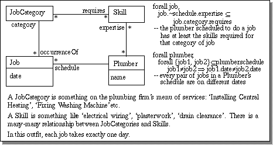
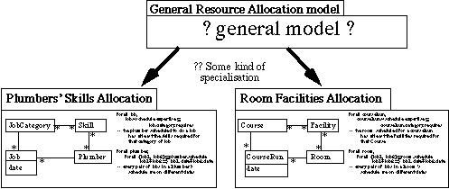
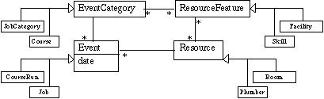

Building models from
Generic Frameworks
TriReme International Ltd
The Problem
John Cameron described this problem in his excellent talk at OT96.
I am called upon to model a plumbing company, in preparation for designing
a job scheduling system. The essential requirements are that plumbers must
not be allocated to simultaneous jobs, and a suitably skilled plumber must
be allocated to each job.
As part of my specification of the system, I draw this model:

The next job would be to go into the use-cases and decide what operations
the system must perform; and after that, to get into the design. But I feel
that in this model I've captured the essence of what the system is about,
and quite precisely too.
Now suppose I get another piece of modelling work from a training company.
It has various lecture rooms, each with different installed facilities -
computers, whiteboards, soundproofing, etc. All their courses last one week,
and they need to ensure that lecture rooms aren't overbooked, and that each
course is allocated to a room that has the appropriate facilities. Of course,
I soon recognise that this is a very similar problem to the plumbers. A
quick solution is to cut and paste and relabel the boxes and lines.
But I'd like the two models (plumbing and training) to be specialisations
of a single model. That way, if I later have any new insights about resource
allocation in general, they can automatically be adopted within the two
specific models.

The questions are,
- What's in the "general model" ?
- What is the means by which it is specialised to form the particular
models?
The Wrong Answer
My first bright idea is to make some superclasses:

Then the specialisation is just a question of ignoring the classes I'm not
interested in for a particular application.
But this ain't right. In this model, a training Room can be allocated to
a plumbing Job; and a Plumber could be expected to have an OHP.
The Right Answer
The general model should be (I contend) a template or modelling framework,
from which the specific models can be generated. Modelling frameworks make
very powerful re-usable design components.
This paper describes modelling frameworks and their use in more detail.
In the workshop, we'll explore some of these ideas by trying out
several examples - bring your ideas too, please!
Click here to start the discussion before the conference